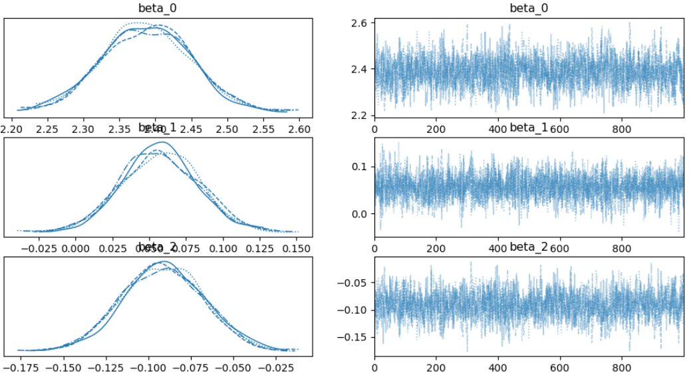
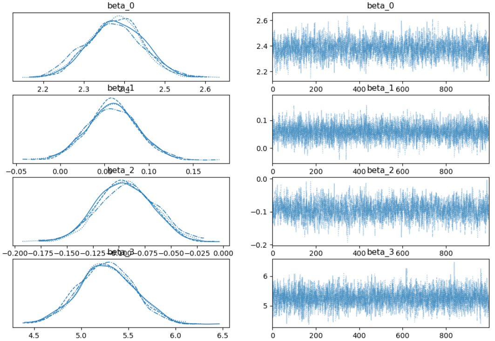
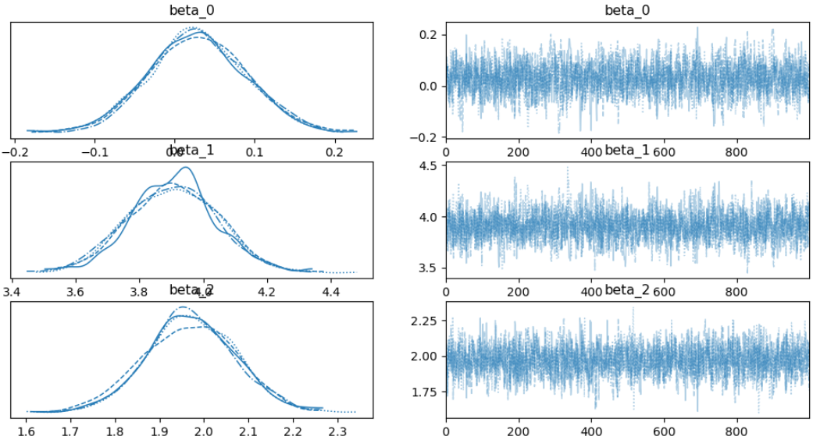
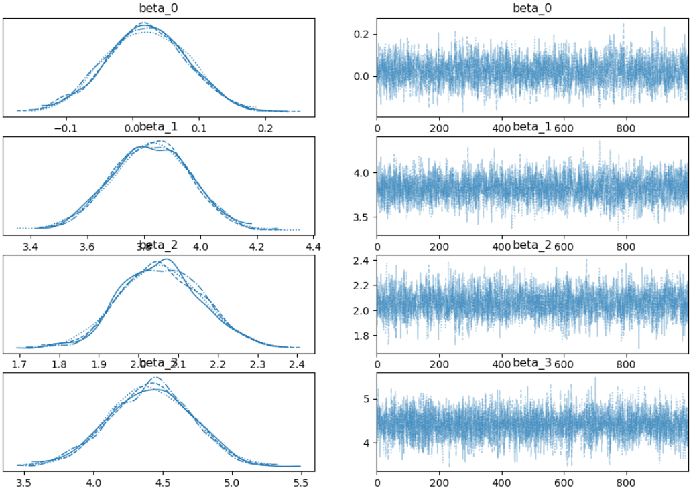
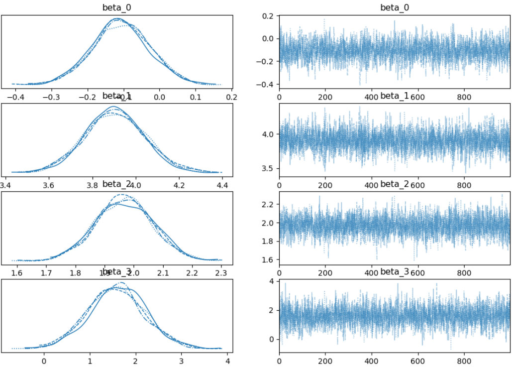
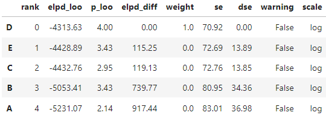
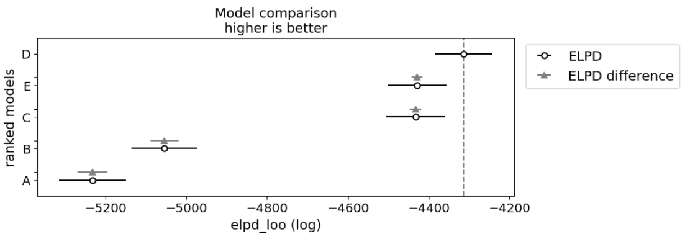

Introduction
The position of umpiring can be a strenuous one: an average game consists of over 120 pitches, requiring the umpire to ‘call’ whether the pitches are balls or strikes. This project is an attempt to predict the performance of umpires using 3 different datasets. Pitch tracking technology known as PITCHf/x provide locations of pitches and other statistics from each pitch are collected. On average, umpires miss about 10 percent of calls.
This project reports on the call precision of a particular umpire through the use of Bayesian logistic models. Various models were generated to compare these attributes over three separate umpires.
Data Description
The data from the PITCHf/x software was provided through spreadsheets of various pitch reports spanning from 2018-2022. Each record contains 92 different features, ranging from various player statistics to the x and z-axis position coordinates of the ball.
Initial data sets required evaluation to develop meaningful variables for feature selection. For instance, a variable was developed to indicate an umpire's incorrect call based on pitch locations.
Methodology
Determining important features for the models was challenging due to the number of variables in the datasets. Initially, models of intuitive features like pitch velocities and spin rates were created but did not perform well.
Model performance was ultimately improved by introducing manually calculated variables. These variables, known as 'x_dis' and 'z_dis', calculate the distance to the nearest strikezone in the x and z direction. This metric is one of the best for predicting umpire performance as seen by the model comparison.
Models and Evaluation
Various Bayesian logistic models were developed and compared to determine the best predictors of umpire call precision. Below are some of the models and their evaluations:
Model A: 'plate_x', 'plate_z'
This baseline model predicts umpire ability based solely on pitch location.
Model B: 'plate_x', 'plate_z', 'delta_run_exp'
This model introduces 'delta_run_exp' which indicates the change in run expectancy.
Model C: 'x_dis', 'z_dis'
This model uses manually calculated distances to the nearest strike zone boundaries.
Model D: 'x_dis', 'z_dis', 'delta_run_exp'
This model combines the distance metrics with 'delta_run_exp'.
Model E: 'x_dis', 'z_dis', 'pitcher_walkRate'
This model includes the pitcher's walk rate as an additional predictor.
Results and Discussion
Model D performed the best across all umpire data sets, indicating that 'x_dis', 'z_dis', and 'delta_run_exp' are the most effective predictors of umpire accuracy. The table ranking of models can be seen below using LOOCV:
LOOCV is a type of cross-validation method in which a single data point is removed from the dataset, and the model is trained on the remaining data points. The removed data point is then used as a test case to evaluate the model's performance. A visual comparison of this table can be seen below.
Conclusion
The Bayesian logistic modeling approach effectively identified key predictors of umpire call precision. The best predictors were found to be the distances from pitch location to strike zone boundaries and the change in run expectancy.